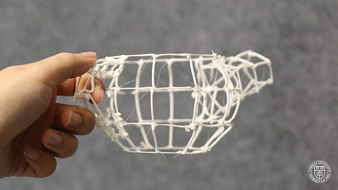

We present the Robotic Modeling Assistant (RoMA), an interactive fabrication system providing a fast, precise, hands-on and in-situ modeling experience with an augmented reality CAD editor and a robotic arm 3D printer.
As a designer creates a new model using RoMA AR CAD editor, features are constructed concurrently by a 3D printing robotic arm sharing the same design volume. The partially printed physical model then serves as a tangible reference for the designer as she adds new elements to her design.
With RoMA, users can integrate real-world constraints into a design rapidly, allowing them to create well-proportioned tangible artifacts. Users can even directly design on and around an existing object, and extending the artifact by in-situ fabrication.
On the hardware end, RoMA consists of an augmented reality headset with its controllers (both indicator and cutter), a rotating platform, and a 6DOF robotic 3D printer.
On the software side, RoMA features a custom AR CAD editor, an end-to-end pipeline that integrates AR and robot control, and a proxemics-inspired handshake mechanism to support human-robot interaction. To design a primitive, the designer remains near the building platform. The printing system keeps the platform immobile and prints the part of the model currently in the back half of the platform. At any time, the designer can touch the handle of the platform and rotate it to bring part of the model forward. The robotic arm will park away from the user automatically. If the designer steps away from the printing platform, the robotic fabricator can take the full control of the platform and finish the printing job.
We showcase the ability of our current prototype with a teapot example which handle fits tight to the user's finger; a two-floor garage example which is designed with the Lego figure put on top of the printed first floor; a lion toy with a printed new cape; and a jet fighter with a newly printed stand.
Created by:
Huaishu Peng, Jimmy Briggs, Cheng-Yao Wang, Kevin Guo, Joseph Kider, Stefanie Mueller, Patrick Baudisch, François Guimbretière
Publications:
News:
Cornell Homepage | Designboom | Designboom | Techcrunch | Wired Italy | Gizmodo Japan | 3D Printing Industry | Digital trends
Figures: